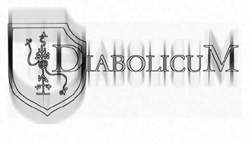
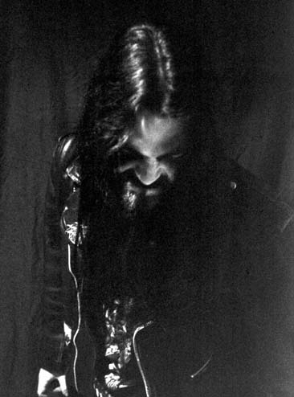

Diabolicum
Есть мир, в котором живет человек. Есть мир, который живет за счет человека.
Человек доволен благами мира первого. Человек ослеплен и оглушен благом мира второго. Человек пал. Падает мир, в котором живет человек. Падет мир, что агонизирует за счет жизни человека. Ибо всегда был и есть тихий голос внутри, говорящий правду. И в сумерках миров звучат молитвы черных душ.
Повелитель Ада
Услышь мой смиренный зов
Обрати взор свой на меня,
Бесчеловечный Владыка
Взгляни на своего слугу,
Выступающего против элохим и
Отрицающего саму жизнь
О Великий бог Сатана,
Могущественный король,
Обрати свой взор на своего слугу.
Infernalord (The Prey Of Blacksouls) – Diabolicum, “The Grandeur Of Hell”, 1999.
Краткая история проекта:
…декабрь 1994 – создан проект Imperial усилиями Sasrof и Thorne. Первое демо “Mori Voluntaria” записывается за два дня в психиатрической клинике.
1996 - смена состава и новое демо “The Imperial Darkness”.
1997 – Imperial меняет название на Diabolicum и записывает свой дебют “The Grandeur Of Hell (Soli Satanae Gloriam). Альбом выходит в октябре того же года.
2000 – Diabolicum покидает Napalm Records и находит нового издателя в лице Code 666.
2001 – второй альбом Diabolicum “The Dark Blood Rising (The Hatecrowned Retaliation).
 Diabolicum
живет и продолжает свое дело благодаря усилиям:
Diabolicum
живет и продолжает свое дело благодаря усилиям:
Sasrof (Björn Holmberg) – гитара, клавишные, вокал. Также участник The Bloodline, Helvete, Liliths Womb, The Sect, Setherial, War Anthem.
Nathzion (Zeb Nilsson) – гитара. Участник Aeon, And Angels Wept, A-Teem, Defaced Creation.
Blackblood (Tommy Dahlström) – вокал. Участвует в Aeon, Defaced Creation.
Gorgorium (Kalle Antonsson) – басс. Участник Assassins, Divine Desecration.
R2 Amath (Arrtu Malki) – ударные. Участник Aeon, And Angels Wept, Defaced Creation.
Thorne (1994-1995) – ударные.
Thyrfing (1996-1997) – гитара, вокал.
На вопросы отвечает Sasrof.
CONTRA DEI: Что нового во владениях DIABOLICUM?
Sasrof: В настоящее время мы работаем над нашим третьим проклятием под названием "Vengeance", которое будет записано в июне.
Это проклятие будет издано при участии повелителей электронной тьмы – Code 666.
Также в настоящее время я полностью занят работой над моим другим проектом под названием Bloodline.
CD: На вашем альбоме Dark Blood Rising, каждая композиция посвящается кому-то определенному. Что это посвящение означает для тебя и чему посвящена твоя жизнь?
S: Они, это те, кто повлиял на меня, когда я писал гимны, это те, кто усиливают Тьму и губят свет внутри меня.
Моя жизнь и смерть посвящены Азарату (Azarate), безграничному Повелителю Хаоса.
CD: Какова главная цель DIABOLICUM? Как ты думаешь, для чего ты родился, с какой целью находишься на этой планете?
S: Главная цель заключается в усилении Тьмы внутренней, как внутри меня, так и в слушателях.
Цель моего рождения заключается в следующем: Рождение – Размножение – Смерть, таким образом, умирающий мир Энки (Enki) сохраняется живым для следующих поколений.
Но я стремлюсь (и буду стремиться) подняться выше Иллюзии, я стою на краю бушующей Бездны и мне следует сделать еще несколько шагов, прежде чем я смогу, наконец, покинуть эту непристойную и грязную планету.
 CD:
Зависишь ли ты от кого-нибудь/чего-нибудь? Что такое свобода для тебя?
CD:
Зависишь ли ты от кого-нибудь/чего-нибудь? Что такое свобода для тебя?
S: Плоть предлагает иллюзию свободы на своем разлагающемся пути через жизнь.
Полная свобода – это когда жизнь заканчивается, и кто-либо совершает падение в алчные челюсти Ада.
CD: Жизнь – это рабство или возможность? Что ты думаешь о самоубийстве?
S: Я понимаю тех, кто выбирает смелый путь, чтобы уйти.
И я также поощряю каждого, чья боль больше чем моя, прислушаться к их внутреннему голосу и поступить так, как об этом говориться в слогане Nike: Just do it.
Жизнь – это рабство, это заключение, но у меня нет желания умереть, в этом нет смысла, ведь можно заставить других страдать и умирать.
Я ищу познания, гнозиса и до тех пор, пока черная кровь не затопит мою душу я буду ждать…
CD: Чему будет посвящен твой последний день на земле.
S: Геноциду.
CD: Ненависть и Мизантропия. Что это для тебя? Суть Ненависти?
S: Я думаю, что я достаточно хорошо объяснил свою точку зрения относительно Ненависти в буклете Dark Blood Rising.
Мизантропия – великолепная философия, единственная которая соответствует Нигилосатанизму (Nihilisatanism).
Мизантропия способна сделать вас изгоем, но такой мизантроп, как я, этого даже не заметил бы.
Если говорить о сути Ненависти то, она сокрыта в пламени Ненависти внутри каждого нас, пламени, которое сжигает человека. Это пламя, что порождено болью жизни, это пламя, которое ведет нас.
CD: Какой способ убийства ты предпочитаешь? Убивать, держа острый нож в руке, или может быть, нажимая на красную кнопку?
S: Конечно, красная кнопка, – убей их всех, и пусть Тьма разберется с каждым.
С другой стороны, более примитивный способ также представляет значительный интерес, но все-таки я предпочитаю глобальный геноцид.
CD: Твои друзья и враги.
S: В самом конце у тебя не будет друзей, все будет зависеть только от тебя.
Моим врагам: я погублю и разрушу вас, изнасилую и уничтожу вас, я украду и сожгу все, что вам принадлежит, я буду пытать вас Чумой и Безумием, все ваши слова будут подвержены осмеянию, я буду стоять по колено в крови тех, кого вы любите.
CD: Представь, что ты приобрел силу, чтобы судить. Какой приговор ты бы вынес богу, человечеству, самому себе?
S: За перечисленные преступления – рабство, насилие над душами, ложь я приговариваю этот мир к смерти. Мир будет принесен в жертву с помощью радиоактивного пламени урана. Я позволю огню очистить этот шар от всей жизни, снова и снова, чтобы убедиться, что мы никогда не поднимемся вновь.
CD: Что ты бы написал на могиле последнего человека?
S: Здесь лежит последний из скорбных остатков жалкой расы.
CD: Участвуешь ли ты в войне против бога? О методах этой войны – ваша музыка, искусство, используете ли вы что-либо еще в этой войне?
S: Я сражаюсь с яхве, ахура-маздой, энки, одином, аллахом, ра и т.д.
Познание, гнозис – это составляет все, музыка и искусство играют незначительную роль, это лишь способ распространять пропаганду и усиливать пламя в слушателях.
CD: Какой способ ведения войны ты бы предпочел – стратегия или яростная атака?
S: Какая стратегия должна быть у тех, кто воюет с божественностью?
Не существует возможности для человека вести любую войну против создания (ибо созданием являются звезды и различные планеты), и я не настолько наивен, чтобы верить, что лично у меня будет возможность уничтожить эту яму из грязи и порока.
Война, которую я веду со светом и богом, бушует в моем сердце и в моей душе…
CD: Взгляд в ближайшее будущее. Бог повержен. Какая цель будет следующей? Твое мнение…
S: Я не могу сказать сейчас, когда я уничтожу бога внутри меня раз и навсегда, ты узнаешь какой, будет моя следующая цель.
CD: Кто для тебя Дьявол?
S: Дьявол – это тихий голос внутри тебя, который говорит правду в этом мире лжи.
CD: Мир существует окруженный Тьмой, исполненной Темных Сил, увидеть и понять которые могут лишь избранные.
Что Тьма для тебя? Как ты чувствуешь Тьму? Что эти силы для тебя?
S: Вселенная подобна маленькому пузырьку воздуха в Вечном, Черном Океане.
Тьма, (даже Та, что преследует тебя поздно ночью) чиста и извечна, но создание сжигает себя, дабы существовать, Тьма же длится вечно.
Я чувствую Ее внутри себя, в моем сознании, струящуюся внутри моих вен.
CD: Что ты думаешь о явлении одержимости демонами?
S: Это очень сильное состояние сознания, когда ты полностью связан с мощными потоками. Фильмы отображают это в примитивной манере.
Поверь мне, кто-либо, будучи одержимым хоть раз, уже никогда не будет “излечен” ни человеком, ни богом.
CD: Что ты думаешь о человеческой природе? Она незначительна и ничего не стоит, или она может быть изменена во что-то иное, то, что можно описать словами Демон, Нечеловек, Волк?
S: Человеческая природа не значит абсолютно ничего до тех пор, пока кто-либо не начнет процесс очищения ее. И либо вы станете рабами, как большинство из племени человека, либо начнете борьбу за что-то отличающееся, за что-то более великое и далекое от иллюзий, за возможность стать Нечеловеком, Волком, Демоном…
CD: Сатанизм. Твое мнение об этом.
S: Есть очень много ответвлений от Древа Тьмы, представители которых называют себя сатанистами (некоторые из них высказывают прямо противоположные мнения). Я нигилосатанист (хаосо-сатанист, если угодно) и я обращаю мало внимания на остальных.
CONTRA DEI: Благодарим тебя за ответы. Твои последние слова читателям…
Sasrof: Если слишком долго смотришь в Бездну, то Бездна тоже смотрит в тебя… \
| Diabolicum c/o Bjorn Holmberg Nackstavagen 25B, 85351 Sundsall Sweden sasfof@hotmail.com |